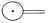
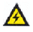
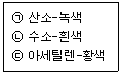

지게차운전기능사 (2006-07-16 기출문제)
1. 디젤기관 연료 중에 공기가 흡입될 경우 나타나는 현상은?
- 분사압력이 높아진다.
- 노크가 일어난다.
- 시동이 잘된다.
- 기관 회전이 불량하다.
(정답률: 49%)

2. 냉각장치에서 밀봉 압력식라디에이터캡을 사용하는 것으로 가장 적합한 것은?
- 엔진온도를 높일 때
- 엔진온도를 낮게 할 때
- 압력밸브가 고장일 때
- 냉각수의 비점을 높일 때
(정답률: 59%)
3. 디젤기관에서 부실식과 비교할 경우 직접분사 연소실의 장점이 아닌 것은?
- 냉간시동이 용이하다.
- 연소실구조가 간단하다.
- 연료소비율이 낮다.
- 저질 연료의 사용이 가능하다.
(정답률: 56%)
4. 기관에서 밸브의 개폐를 돕는 것은?
- 너클 암
- 스티어링 암
- 로커 암
- 피트먼 암
(정답률: 74%)
5. 디젤기관 연료장치에서 연료필터의 공기를 배출하기 위해 설치되어 있는 것은?
- 벤트 플러그
- 드레인 플러그
- 코어 플러그
- 글로우 플러그
(정답률: 33%)
6. 방열기에 물이 가득 차 있는데도 기관이 과열되는 원인으로 가장 적절한 것은?
- 펜밸트의 장력이 세기 때문
- 사계절용 부동액을 사용했기 때문
- 정온기가 열린 상태로 고장 났기 때문
- 라디에이터에 팬이 고장이 났기 때문
(정답률: 67%)
7. 기관에서 엔진오일이 연소실로 올라오는 이유는?
- 피스톤링 마모
- 피스톤핀 마모
- 커넥팅로드 마모
- 크랭크축 마모
(정답률: 73%)
8. 기관오일 압력이 상승하는 원인에 해당 될 수 있는 것은?
- 오일 펌프가 마모되었을 때
- 오일 점도가 높을 때
- 윤활유가 너무 적을 때
- 유압조절 밸브스프링이 약할 때
(정답률: 66%)
9. 배기관이 불량하여 배압이 높을 때 기관에 생기는 현상으로 가장 거리가 먼 것은?
- 기관이 과열된다.
- 냉각수 온도가 내려간다.
- 기관의 출력이 감소된다.
- 피스톤의 운동을 방해한다.
(정답률: 65%)
10. 기관에서 열효율이 높다는 것은?
- 일정한 연료 소비로서 큰 출력을 얻는 것이다.
- 연료가 완전 연소하지 않는 것이다.
- 기관의 온도가 표준보다 높은 것이다.
- 부조가 없고 진동이 적은 것이다.
(정답률: 74%)
11. 기관이 실화 (miss fire)되면 일어나는 현상은?
- 엔진의 출력이 증가 한다.
- 연료소비가 적다.
- 엔진이 과냉한다.
- 엔진회전이 불량하다.
(정답률: 67%)
12. 엔진을 정지하고 계기판 전류계의 지침을 살펴보니 정상에서 (-)방향을 지시하고 있다. 그 원인이 아닌 것은?
- 전조등 스위치가 점등위치에 있다.
- 배선에서 누전되고 있다.
- 시동스위치가 엔진 예열장치를 동작시키고 있다.
- 축전지 본선 (main line) 이 단선되어 있다.
(정답률: 37%)
13. AC 발전기에서 전류가 발생 되는 것은?
- 로터 코일
- 레귤레이터
- 스테이터 코일
- 전기자 코일
(정답률: 52%)
14. 납산용 일반축전지가 방전되었을 때 보충전시 주의하여야할 사항으로 가장 거리가 먼 것은?
- 충전시 전해액의 온도를 45℃ 이하로 유지할 것
- 충전시 가스발생이 되므로 화기에 주의할 것
- 충전시 벤트플러그를 모두 열 것
- 충전시 배터리 용량보다 조금 높은 전압으로 과충전 할 것
(정답률: 76%)
15. 기동전동기는 회전되나 엔진은 크랭킹이 되지 않는 원인으로 맞는 것은?
- 축전지 방전
- 기동전동기의 전기자 코일 단선
- 플라이휠 링기어의 소손
- 엔진피스톤 고착.
(정답률: 47%)
16. 예열플러그를 빼서 보았더니 심하게 오염 되었다.그 원인으로 가장 적합한 것은?
- 불완전 연소 또는 노킹
- 엔진 과열
- 플러그의 용량 과다
- 냉각수 부족
(정답률: 72%)
17. 축전지를 교환, 장착할 때의 연결순서로 맞는 것은?
- (+)나 (-)선 중 편리한 것부터 연결하면 된다.
- 축전지의 (-)선을 먼저 부착하고 , (+)선을 나중에 부착한다.
- 축전지의 (+),(-)선을 동시에 부착한다.
- 축전지의 (+)선을 먼저 부착하고 , (-)선을 나중에 부착한다.
(정답률: 64%)
18. 모터그레이더 앞바퀴 경사장치(리닝장치)의 설치 목적으로 맞는 것은?
- 조향력을 증가시킨다.
- 회전반경을 작게 한다.
- 견인력을 증가시킨다.
- 완충작용을 한다.
(정답률: 39%)
19. 굴삭기하부기구의 구성요소가 아닌 것은?
- 트랙 프레임
- 주행용 유압 모터.
- 트랙 및 롤러
- 유압 회전 커플링 및 선회 장치
(정답률: 47%)
20. 지게차에서 틸트실린더의 역할은? (문제 복원 오류로 보기 내용이 정확하지 않습니다. 정확한 보기 내용을 아시는 분께서는 오류신고 또는 게시판에 작성 부탁드립니다.)
- 포크의 상 ? 하 이동
- 차체 수평유지
- 마스트 앞 ? 뒤 경사각 유지
- 차체 좌 ? 우회전
(정답률: 66%)
21. 건설기계 운전 중 주의사항으로 가장 거리가 먼 것은?
- 기관을 필요 이상 공회전 시키지 않는다.
- 급가속 급브레이크는 장비에 악영향을 주므로 피한다.
- 커브주행은 커브에 도달하기 전에 속력을 줄이고, 주의하여 주행한다.
- 주행 중에 이상소음, 냄새 등의 이상을 느낀 경우에는 작업 후에 점검한다.
(정답률: 84%)
22. 앞바퀴 정렬 중 캠버의 필요성에서 가장 거리가 먼 것은?
- 앞차축의 휨을 적게 한다.
- 조향휠의 조작을 가볍게 한다.
- 조향시 바퀴의 복원력이 발생한다.
- 토(Toe)와 관련성이 있다.
(정답률: 35%)
23. 기중기의 붐 길이를 결정하는데 가장 거리가 먼 것은?
- 작업시의 속도
- 이동할 장소
- 화물의 위치
- 적재할 높이
(정답률: 69%)
24. 동력전달장치에 사용되는 차동기어장치에 대한 설명으로 가장 거리가 먼 것은?
- 선회할 때 좌우 구동바퀴의 회전속도를 다르게 한다.
- 선회할 때 바깥쪽 바퀴의 회전속도를 증대 시킨다.
- 보통 차동기어 장치는 노면의 저항을 작게 받는 구동바퀴에 회전속도가 빠르게 될 수 있다.
- 기관의 회전력을 크게 하여 구동바퀴에 전달한다.
(정답률: 40%)
25. 굴삭기의 작업 장치로 가장 적절하지 않는 것은?
- 브레이커
- 파일드라이브
- 힌지 버켓
- 크러셔
(정답률: 45%)
26. 지게차를 경사면에서 운전할 때 안전운전 측면에서 짐의 방향으로 가장 적절한 것은?
- 짐이 언덕 위쪽으로 가도록 한다.
- 짐이 언덕 아래쪽으로 가도록 한다.
- 운전에 편리하도록 짐의 방향을 정한다.
- 짐의 크기에 따라 방향이 정해진다.
(정답률: 78%)
27. 안전 기준을 초과하는 화물의 적재허가를 받은 자는 그 길이 또는 폭의 양끝에 너비 및 길이를 각 각 몇 cm이상의 빨간 헝겊으로 된 표지를 달아야 하는가?
- 30 (너비), 40 (길이)
- 40 (너비), 50 (길이)
- 30 (너비), 50 (길이)
- 60 (너비), 50 (길이)
(정답률: 56%)
28. 건설기계 조종사 면허증을 반납하지 않아도 되는 경우는?
- 면허가 취소된 때
- 면허의 효력이 정지된 때
- 분실로 인하여 면허증의 재교부를 받은 후 분실된 면허증을 발견할 때
- 일시적인 부상 등으로 건설기계 조종을 할 수 없게 된 때.
(정답률: 75%)
29. 운전자가 진행방향을 변경하려고 할 때 회전신호를 하여야 할 시기로 맞는 것은?
- 회전하려고 하는 지점의 30m 전에서
- 특별히 정하여져 있지 않고 운전자 임의대로
- 회전하려고 하는 지점 3m전에서
- 회전하려고 하는 지점 10m전에서
(정답률: 68%)
30. 편도 4차로 자동차 전용도로에서 굴삭기와 지게차의 주행차선은?
- 1차로
- 2차로
- 4차로
- 3차로
(정답률: 80%)
31. 교통사고 처리특례법상 10개 항목에 해당되지 않는 것은?(오류 신고가 접수된 문제입니다. 반드시 정답과 해설을 확인하시기 바랍니다.)
- 중앙선 침범
- 무면허 운전
- 신호위반
- 통행 우선순위 위반
(정답률: 73%)
32. 철길 건널목 통과 방법에 대한 설명으로 틀린 것은?
- 철길 건널목에서는 앞지르기를 하여서는 안 된다.
- 철길 건널목 부근에서는 주, 정차를 하여서는 안 된다.
- 철길 건널목에 일시 정지표지가 없을 때에는 서행하면서 통과한다.
- 철길 건널목에서는 반드시 일시 정지 후 안전함을 확인한 후에 통과한다.
(정답률: 80%)
33. 등록번호표의 반납사유가 발생하였을 경우에는 며칠이내에 반납하여야 하는가?
- 5
- 10
- 15
- 30
(정답률: 48%)
34. 건설기계로 등록된 10년 된 덤프트럭의 검사유효기간은?
- 6개월
- 1년
- 1년 6월
- 2년
(정답률: 49%)
35. 유압펌프에서 소음이 발생하는 원인이 아닌 것은?
- 오일의 양이 적을 때
- 펌프의 속도가 느릴 때
- 오일 속에 공기가 들어 있을 때
- 오일의 점도가 너무 높을 때
(정답률: 43%)
36. 일반적으로 유압장치에서 릴리프밸브가 설치되는 위치는?
- 펌프와 오일탱크 사이
- 여과기와 오일탱크 사이
- 펌프와 제어 밸브 사이
- 실린더와 여과기 사이
(정답률: 55%)
37. 2개 이상의 분기회로가 있을 때 순차적인 작동을 하기위한 압력제어밸브는?
- 시퀀스밸브
- 감압밸브
- 릴리프밸브
- 리듀싱밸브
(정답률: 65%)
38. 그림에서 첵밸브를 나타낸 것은?



(정답률: 74%)
39. 유압장치에서 오일에 거품이 생기는 원인으로 가장 거리가 먼 것은?
- 오일택크와 펌프사이에서 공기가 유입될 때
- 오일이 부족할 때
- 펌프축 주위의 토출측 실(seal)이 손상되었을 때
- 유압유의 점도 지수가 클 때
(정답률: 40%)
40. 유압장치가 작동 중 과열이 발생할 때 원인으로 가장 적절한 것은?
- 오일의 양이 부족하다.
- 오일펌프의 속도가 느리다.
- 오일의 압력이 낮다.
- 오일의 증기압이 낮다.
(정답률: 64%)
41. 유압건설기계의 고압호스가 자주 파열되는 원인으로 가장 적합한 것은?
- 유압펌프의 고속 회전
- 오일의 점도 저하
- 릴리프밸브의 설정 압력 불량
- 유압모터의 고속 회전
(정답률: 55%)
42. 유압 모터의 종류가 아닌 것은?
- 기어 모터
- 베인모터
- 피스톤 모토
- 직권형 모터
(정답률: 56%)
43. 유압 작동유를 교환 하고자 할 때 선택 조건으로 가장 적합한 것은?
- 유명정유회사의 제품
- 가장 가격이 비싼 유압작동유
- 건설기계장비 해당 정비지침서나, 제작회사에서 추천하는 유압작동유
- 시중에서 쉽게 구입할 수 있는 유압 작동유
(정답률: 86%)
44. 유압 에너지의 저장 , 충격흡수 등에 이용되는 장치는?
- 축압기(accumlator)
- 스트레이너(strainer)
- 펌프(pump)
- 오일 탱크(oil tank)
(정답률: 64%)
45. 유체클러치에서 와류를 감소시키는 장치는?
- 스테이터
- 가이드링
- 펌프
- 임펠러
(정답률: 37%)
46. 유압 모터의 가장 큰 특징은?
- 유량 조정이 용이하다.
- 오일의 누출이 많다.
- 간접적으로 큰 회전력을 얻는다.
- 무단변속이 용이하다.
(정답률: 59%)
47. 안전관리상 감전의 위험이 있는 곳의 전기를 차단하여 수리점검을 할 때의 조치와 관계가 없는 것은?
- 스위치에 통전 장치를 한다.
- 기타 위험에 대한 방지를 한다.
- 스위치에 안전장치를 한다.
- 필요한 곳에 통전 금지기간에 관한 사항을 게시한다.
(정답률: 53%)
48. 작업장의 안전사항 중 틀린 것은?
- 공구는 제자리에 정리한다.
- 기름 묻은 걸레는 한쪽으로 쌓아둔다.
- 무거운 구조물은 반드시 사람의 힘으로 옮기지 않아도 된다.
- 작업이 끝나면 모든 사용 공구는 정 위치에 정리정돈 한다.
(정답률: 84%)
49. 건설기계에는 소화기를 사용이 편리한 곳에 비치하도록 되어 있다. 다음 중 어떤 종류의 소화기가 가장 적합한가?
- A급 화재소화기
- 포말 B소화기
- A B C소화기
- 포말소화기
(정답률: 61%)
50. 소켓렌치 사용에 대한 설명으로 틀린 것은?
- 임펙트용으로 사용되므로 수작업시는 사용하지 않도록 한다.
- 큰 힘으로 조일 때 사용한다.
- 오픈렌치와 규격이 동일하다.
- 사용 중 잘 미끄러지지 않는다.
(정답률: 59%)
51. 축전지를 건설기계에 설치한 채 급속 충전시 주의사항으로 가장 거리가 먼 것은?
- 축전지의 (+)와 (-) 케이블을 잘 고정하고 충전 한다.
- 작업시간 등으로 충전할 수 있는 시간이 충분하지 않을 때에만 이 방법을 사용 한다.
- 충전 중 전해액의 온도가 45℃이상 되지 않도록 한다.
- 충전 전류는 축전지 용량의 1/2이 좋다.
(정답률: 42%)
52. 사고로 인하여 위급한 환자가 발생하였다. 의사의 치료를 받기 전까지 응급처치를 실시할 때. 응급처치 실시자의 준수 사항으로 가장 거리가 먼 것은?
- 의식 확인이 불가능 하여도 생사를 임의로 판정은 하지 않는다.
- 사고현장 조사를 실시한다.
- 원칙적으로 의약품의 사용은 피한다.
- 정확한 방법으로 응급처치를 한 후에 반드시 의사의 치료를 받도록 한다.
(정답률: 62%)
53. 산업안전보건표지에서 그림이 표시하는 것으로 맞는 것은?

- 독극물 경고
- 폭발물 경고
- 고압전기 경고
- 낙하물 경고
(정답률: 88%)
54. 다음에서 산소용접기에 사용되는 용기의 도색으로 모두 맞는 것은?

- (ㄱ)
- (ㄴ), (ㄷ)
- (ㄱ), (ㄷ)
- (ㄱ), (ㄴ), (ㄷ)
(정답률: 61%)
55. 낙하, 추락 또는 감전에 의한 머리의 위험을 방지하는 보호구는?
- 안전대
- 안전모
- 안전화
- 안전장갑
(정답률: 87%)
56. 다음 중 일반 드라이버 사용시 안전수칙으로 틀린 것은?
- 정을 대신할 때는 (-) 드라이버를 사용한다.
- 드라이버에 충격압력을 가하지 말아야 한다.
- 자루가 쪼개졌거나 또한 허술한 드라이버는 사용하지 않는다.
- 드라이버의 끝을 항상 양호하게 관리하여야 한다.
(정답률: 83%)
57. 배관내부의 압력이 중압인 도시가스 배관이 지하에 매설되어 있다. 배관 표면의 색상은?
- 적색
- 황색
- 회색
- 녹색
(정답률: 42%)
58. 전선로 부근에서 작업할 때 사항 중 틀린 것은?
- 전선은 바람에 흔들리게 되므로 이를 고려하여 이격거리를 증가시켜 작업하여 한다.
- 전선이 바람에 흔들리는 정도는 바람이 강할수록 많이 흔들린다.
- 전선은 철탑 또는 전주에서 멀어질수록 많이 흔들린다.
- 전선은 자체 무게가 있어 바람에는 흔들리지 않는다.
(정답률: 81%)
59. 고압 전력케이블을 지중에 매설하는 방법이 아닌 것은?
- 직매식
- 관로식
- 전력구식
- 궤도식
(정답률: 52%)
60. 도로 굴착자는 되메움 공사 완료 후 최소 몇 개월 이상 지반침하유무를 확인하여야 하는가?
- 1개월
- 2개월
- 3개월
- 4개월
(정답률: 57%)